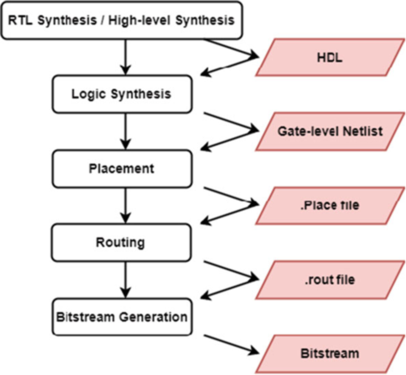
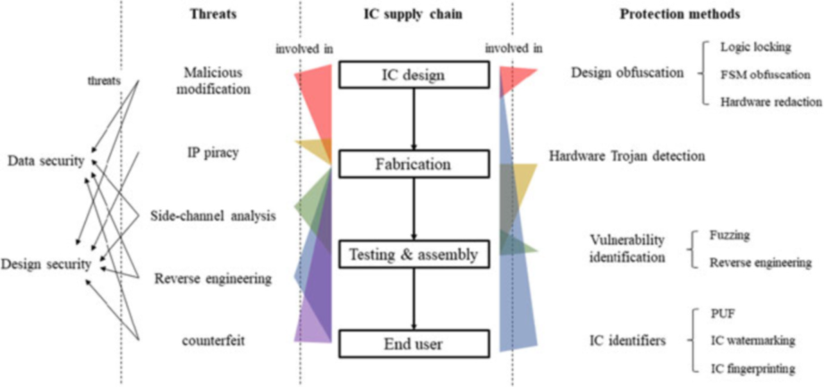

AI for circuit and system design
Two survey chapters in the Springer book "AI-Enabled Electronic Circuit and System Design" (2025) review how machine learning is being used to improve the tools that design chips and FPGAs. The first walks through every stage of the FPGA design flow, from writing hardware code to routing wires, and the second covers how machine learning both attacks and defends the security of integrated circuits across the supply chain.
Design
FPGA CAD flow, stage by stage
Chapter 7 (Lin and Yi) introduces FPGA architecture and vendors, then lays out the standard FPGA CAD flow: high-level or RTL synthesis, logic synthesis, placement, routing, and bitstream generation. Each later section takes one stage, explains the conventional algorithm, and points out where it is slow or inaccurate.
Where machine learning helps in the FPGA flow
The chapter surveys ML methods for each stage: predicting timing, resource and power from HLS reports, ML-guided design space exploration over HLS pragmas, reinforcement learning for logic optimization and technology mapping, and ML-based congestion and routability prediction during placement. For routing it covers deep Q-network, reinforcement learning and CNN-based routers, and it compares HLS exploration methods by ease of use, runtime and accuracy.
Threats across the IC supply chain
Chapter 13 (Yang, Hu, Chen, Lin, Yi, Beerel and Nuzzo) maps five threats to hardware, namely malicious modification, IP piracy, side-channel analysis, reverse engineering and counterfeiting, onto the stages of the IC supply chain. It pairs them with four groups of protection methods: design obfuscation, hardware Trojan detection, vulnerability identification, and IC identifiers.
Machine learning on both sides of hardware security
The chapter reviews ML-assisted attacks on logic locking and the defenses against them, ML for hardware Trojan detection, ML in hardware fuzzing and IC reverse engineering, and ML modeling attacks and defenses for physical unclonable functions. It argues that conventional design methods should generate the training data and correct ML outputs, while ML captures complex patterns and explores large design spaces efficiently.

